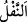
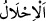
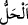

edilen mal feydir. Harâc feydir. Çünkü bütün bu sayılanlar Allah Teâlâ’nın
müşriklerden müslümanlara ganîmet olarak ihsan ettiği mallardır.
Allah Teâlâ’nın “Allâh’ın sana ganîmet olarak verdiği” kavlinin hakikati Allah
Teâlâ’nın sana fey, yâni ganîmet olarak bahşettiği demektir. Câriyenin helâl kılınmasının
savaş esiri olarak alınmasına bağlanması yine Hz. Peygamber (s.a.) için evlâ olanı
seçmek maksadıyladır. Çünkü satın alınan câriyenin işinin başlangıcı ve başından
geçenler böyle gerçekleşmez. Bu ifâde Mısırlı Mâriye ve benzerlerini içine almaz
demişlerdir. Çünkü Mâriye savaş esiri değildi. Bilakis Hz. Peygamber (s.a.)’e onu
Mısır Mukavkısı (sultanı) hediye etmişti.
İnsânü’l-uyûn’da şöyle denilmektedir: “Peygamberimiz’in (a.s.) dört câriyesi vardı.
Bunlar Peygamberimiz’in oğlu İbrahim’in annesi Mısırlı Mâriye, Reyhâne, Zeyneb bint
Cahş’ın Peygamberimiz’e (a.s.) hediye ettiği câriye, bir diğeri ise Zelîha/Züleyha el-
Kurazıyye isimli câriyedir.”
Nadroğulları’ndan Reyhâne bint Yezîd’in Irâkî’nin dediğine göre harp esiri bir câriye
olması daha doğru, Hâfız Dimyâtî’nin dediğine göre ise ehl-i ilmin nezdinde onun Hz.
Peygamber (s.a.)’in zevcesi olduğu daha sağlam bir görüştür.
Hayber ganîmetlerinden olan Safiyye bint Huyey el-Hârûniyye ve Cüveyriyye bint
Hâris bin Ebî Savâr el-Huzâiyye el-Mustalikıyye her ne kadar savaş esiri idiyseler de
Hz. Peygamber (s.a.) onları âzâd ederek, savaş esiri olan câriyeler olarak değil hür
kadınlar olarak nikahlamıştır. Nitekim bu konu siyer kitaplarında bu şekilde
açıklanmıştır.
Buna göre “Allâh’ın sana ganîmet olarak verdiği...” kavlinin mânâsı, hediye veya
savaş esiri hangi cihetten olursa olsun Allah Teâlâ’nın sana sevk ve iâde ettiği, senin
nikah ve mülkiyetine intikal ettirdiği hanımlar demektir.
Tefsir sahibi Ebü’s-Suûd Efendi’ye: “Gâzîlerden satın alınan câriyelerde nikâhsız
tasarrufta bulunmakta bir tür kerâhet var mıdır? Çünkü gâzîler arasında yapılan şer‘î
taksîmatta şüphe vardır.” diye soruldu. O da şöyle fetvâ verdi: “Bu zamanda şer‘î
taksimat yoktur. Fakat (hicrî) 948 yılında küllî tenfîl[254] hükmü uygulandı. Beşte biri
(Allah ve Rasûlü için) verilince artık bu taksimatta şüphe kalmaz.”
“ (nefl)” ise gâzînin hissesinden fazla olarak kendisine verilen şeydir. Bu da devlet
başkanı yahut ordu komutanının “Savaşta kim bir düşmanı öldürürse onun mal ve
ganîmeti o gâzîye âiddir.” demesidir. Yahut devlet başkanı veya ordu komutanının
gönderdiği askerî birliğe: “Savaşta elde ettiğiniz ganîmetlerin tamamı, dörtte biri veya
beşte biri de sizindir” demesi ve beşte birini devlet için almamasıdır. Bu durumda
devlet başkanı sözünde durmalıdır.
“Amcanın, halanın, dayının ve teyzenin seninle beraber göç eden” seninle beraber
Mekke’den Medîne’ye çıkan ve vatanlarından ayrılan “kızlarını sana helâl kıldık.”
“ helal kılmak demektir. “, kelimesinin asıl mânâsı düğümü çözmektir. Bir
şeyin helâl olması da mecâzî olarak bu mânâyı ifâde eder. Nitekim el-Müfredât’ta böyle